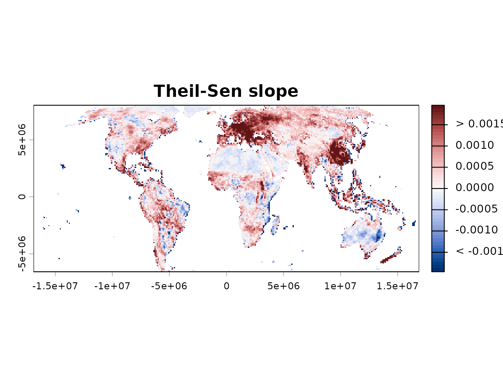

Why this matters
Trend tests and slope estimators answer different questions: the former assess statistical evidence for change, while the latter quantify its magnitude and rate over time.
Having established whether a trend exists in the previous vignette,
this one turns to the second question: how large is it?
slope_estimator() answers that question directly,
independently of whether the trend reached statistical significance.
What slope_estimator() does
Trend magnitude describes how rapidly a variable changes over time.
In sptrends, it is quantified through slope estimation and
expressed in the units of the input variable per unit of time.
slope_estimator() estimates one temporal slope for each
valid raster cell and returns a raster representing the rate of change
across the study area. Theil-Sen (TS) (Theil, 1950; Sen, 1968) is
the default and generally recommended estimator because it provides a
robust balance between computational efficiency and resistance to
outliers.
Basic workflow
The example below applies the recommended Theil-Sen estimator to the complete annual NDVI raster series at its original spatial resolution. The map shows raw slope estimates without filtering by statistical significance.
years <- 1982:2023
ts <- slope_estimator(
r, method = "TS", t = years,
report = FALSE, verbose = FALSE
)
plot(ts)
Understanding the results
Positive values indicate increasing trends, whereas negative values
indicate decreasing trends. A slope of 0.02 represents a
rate of change of 0.02 input units per unit of time. Unless the original
variable is expressed as a percentage, slope values should not be
interpreted as percentages. A slope represents a rate of change, not the
total change over the complete study period.
Slope estimation is particularly useful as a complement to CMK: CMK evaluates the statistical evidence for a spatially contextual trend, whereas the slope quantifies its magnitude. However, CMK does not correct serial correlation internally, so temporal dependence should be diagnosed and treated when necessary before inference. The raw slope map should not be interpreted as a map of statistically significant trends; significance and multiple testing must be evaluated separately.
Choosing the main options
| Method | Robustness | Relative computational cost | Guidance |
|---|---|---|---|
OLS |
Low | Low | Use when assumptions and efficiency justify it |
TS (Theil, 1950; Sen,
1968) |
High | Moderate | Recommended general-purpose choice |
RM (Siegel, 1982) |
Very high | High | Use when extreme contamination is plausible |
OLS is fastest but sensitive to outliers. Theil-Sen (TS)
usually provides the best balance between robustness and computation.
Siegel’s repeated median (RM) is more resistant but
substantially slower.
Common mistakes
- Do not assume that OLS, TS and RM produce identical estimates; they can diverge substantially in the presence of outliers.
- Do not interpret a slope estimate as statistically significant by itself; combine it with a trend test and multiple-testing correction for inferential interpretation (see trend-test vignette and multiple-testing vignette).
- Do not ignore serial correlation when combining slope estimates with significance results; diagnose and treat temporal dependence when necessary (see prewhitening vignette).
- Do not compare slopes expressed in different units without appropriate standardisation; supply actual observation times when measurements are irregularly spaced.
Next steps
Continue to vignette("e-fdr-correction") to decide which
trend-test results remain reliable after testing many cells.
Further details
See ?slope_estimator for formulas, assumptions,
computational costs, robustness, optional smoothing, validation and
complete references.
References
- Sen, P.K. (1968) Estimates of the Regression Coefficient Based on Kendall’s Tau. Journal of the American Statistical Association, 63, 1379-1389. https://doi.org/10.1080/01621459.1968.10480934
- Siegel, A.F. (1982) Robust Regression Using Repeated Medians. Biometrika, 69(1), 242-244. https://doi.org/10.1093/biomet/69.1.242
- Theil, H. (1950) A Rank-Invariant Method of Linear and Polynomial Regression Analysis. Indagationes Mathematicae, 12, 85-91. Reprinted in Raj, B. and Koerts, J. (eds.) Henri Theil’s Contributions to Economics and Econometrics (1992). Springer, Dordrecht. https://doi.org/10.1007/978-94-011-2546-8_20